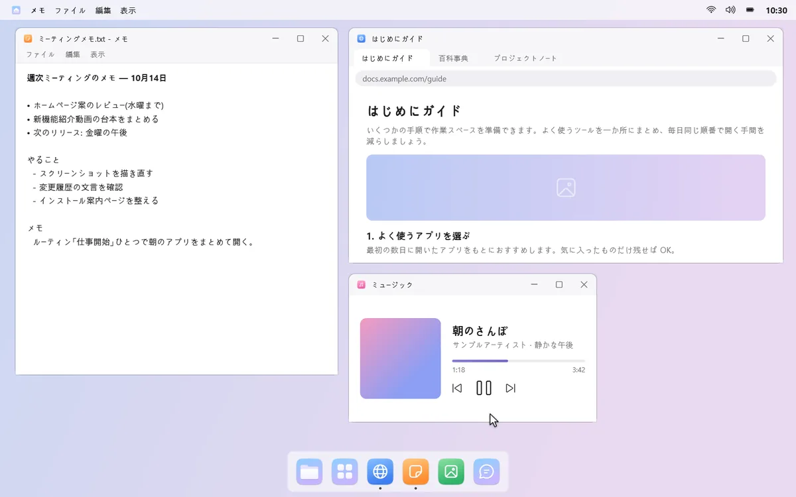
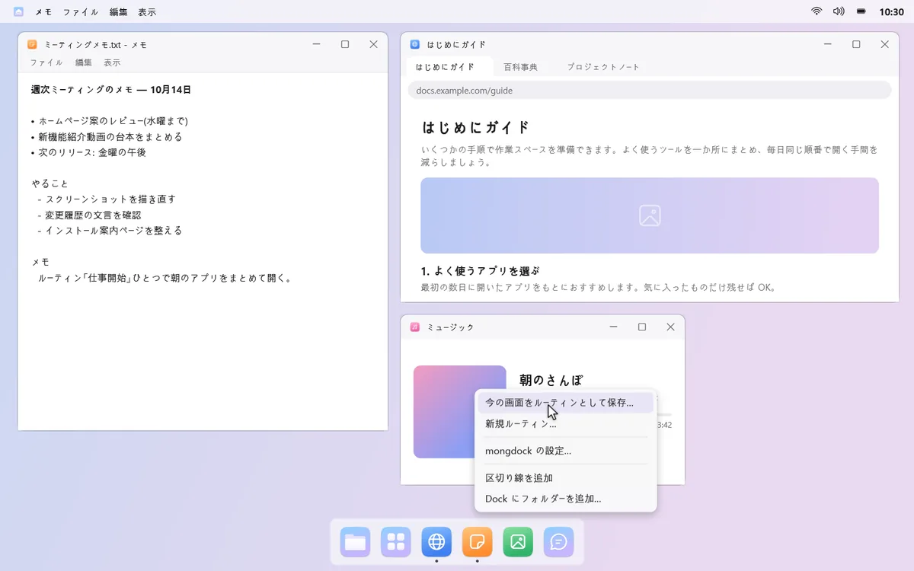
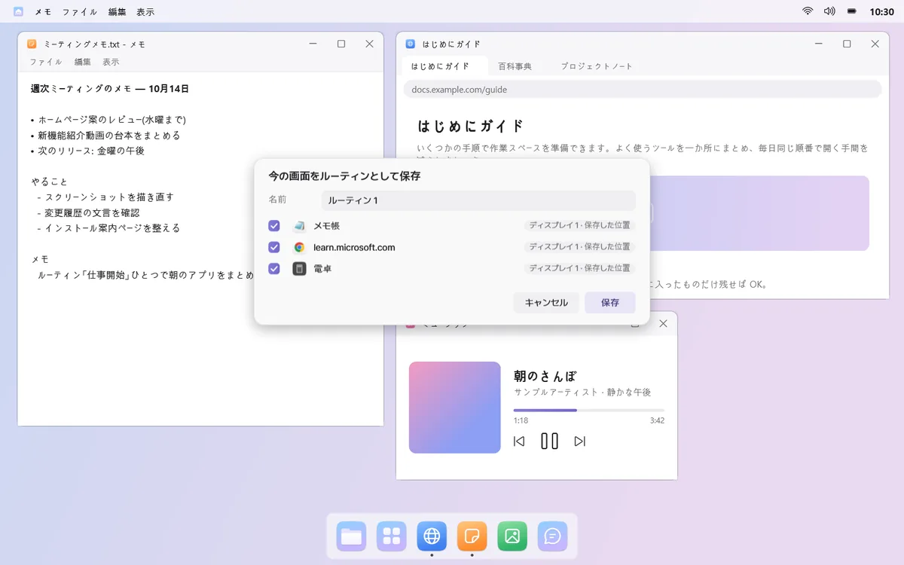
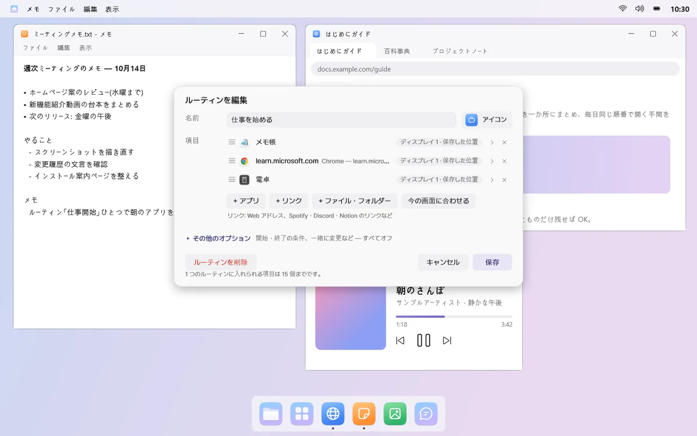
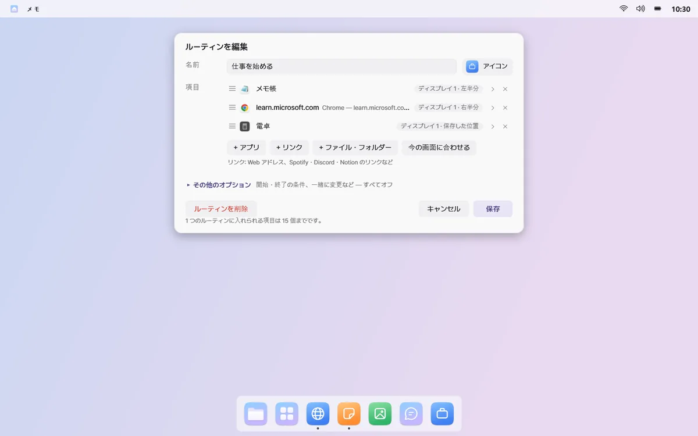
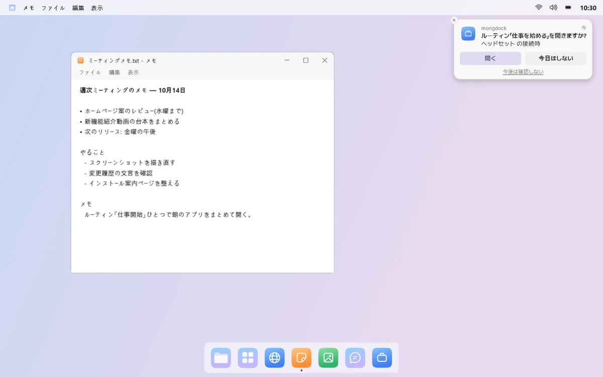

毎日使うアプリを、一度に開く
一緒に使うアプリ・リンク・ゲームを、1 つのルーティンにまとめましょう。クリックすると新しいデスクトップの決めた位置に一度に開き、終了すると、ルーティンが開いたウィンドウだけを閉じます。
たとえば「仕事を始める」をクリックすると、メール・ブラウザー・文書が、決めたディスプレイと位置に開きます。
開くと、位置までぴったり
ルーティンをクリックすると新しい仮想デスクトップができ、アプリごとに決めたディスプレイと位置（最大化、左半分など）で開きます。メニューバーにはルーティン名が表示され、そのデスクトップでの滞在時間も表示できます。


今の画面をそのまま保存
ウィンドウを好きな位置に並べて「今の画面をルーティンとして保存…」を選ぶだけ。よく一緒に開くアプリを mongdock が見つけて、ルーティンを提案することもあります。




アプリもリンクもゲームも
アプリ、複数のタブを開くリンク、ファイルやフォルダーを 1 つのルーティンに入れられます。Steam・Epic・GOG のゲームやランチャーも入れれば、ルーティンを開くとすぐに起動します。

タイミングが来たら、先に聞きます
ヘッドセットやディスプレイをつないだとき、PC の電源を入れたとき、決めた曜日と時刻、特定のアプリを起動したときに「開きますか？」と聞きます。同じ条件で聞くのは 1 日 1 回まで。ふだんは、クリックしたときだけ開きます。

終わるときも、すっきり
「ルーティンを終了」は、ルーティンが開いたウィンドウだけを閉じ、ほかのウィンドウには触れません。ルーティンと一緒にサウンド出力・音量・応答不可・ドックの自動的に隠す設定を変えていた場合は、終了すると元に戻ります。
開始・終了の条件や一緒に変える設定は、編集画面の「その他のオプション」にあります。最初はすべてオフです。
知っておきたいこと
- ウィンドウを 1 つしか開かないアプリ（Discord など）がすでに起動している場合は新しく開かず、そのアプリがあるデスクトップをお知らせします。
- ルーティンを終了するとき、保存するかを確認しているウィンドウは、閉じずにそのまま残します。
- ルーティンを開いたあとに mongdock を再起動すると、ルーティンが開いたウィンドウがわからなくなるため、ウィンドウは手動で閉じてください。